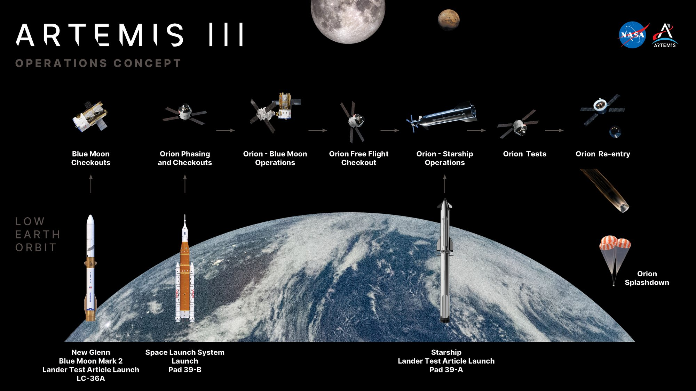
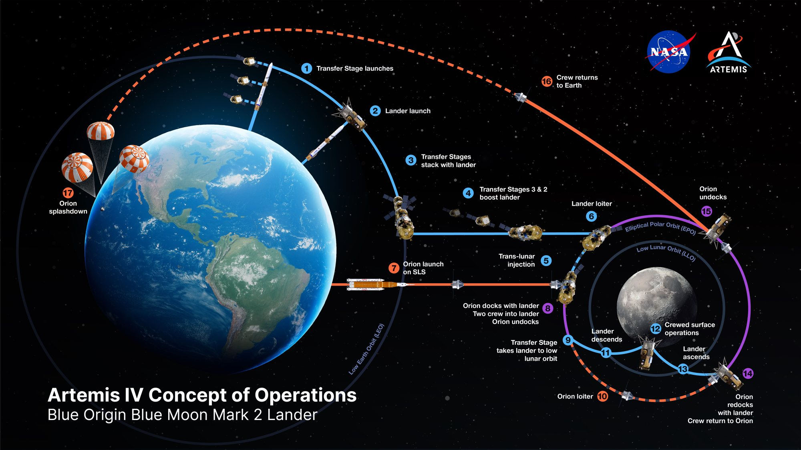
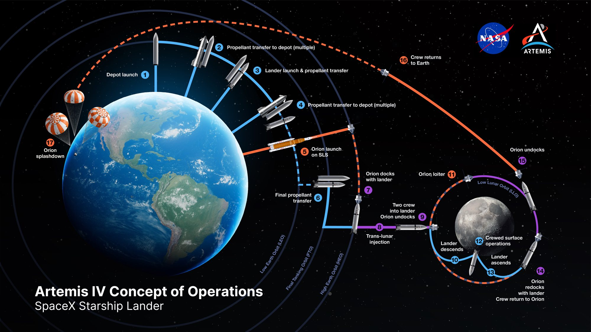

Venerdì 23 ottobre, alle 20 ora italiana, la NASA ha aperto al Kennedy Space Center una conferenza stampa durata più di due ore e intitolata «Artemis Acceleration». Sul palco l’amministratore Jared Isaacman, l’amministratore associato Amit Kshatriya e il responsabile del programma Artemis, Jeremy Parsons. Il messaggio di fondo è stato uno solo: il ritorno sulla Luna resta fissato al 2028. Ma per arrivarci la NASA ha cambiato il modo in cui Orion e i due lander commerciali si incontreranno nello spazio, e la Starship di SpaceX è il veicolo che cambia di più.
Artemis III: tre razzi, due lander, nessuno sbarco
Artemis III non andrà più sulla Luna. Partirà nel 2027, con l’obiettivo dichiarato dell’estate, e resterà in orbita terrestre bassa per circa 14 giorni, che potranno diventare 17. A bordo di Orion voleranno gli astronauti NASA Randy Bresnik, Frank Rubio e Andre Douglas e l’italiano Luca Parmitano dell’Agenzia spaziale europea. Lo scopo è provare, vicino a casa, gli agganci con esemplari di prova dei due lander che dovranno poi portare gli equipaggi sulla superficie.
«Lanciamo tre dei razzi più potenti del mondo, in quella che è probabilmente la campagna di lancio più complicata mai tentata», ha detto Parsons. La sequenza è precisa. Per primo parte da Cape Canaveral un New Glenn di Blue Origin con un Blue Moon Mark 2 di prova, che si sistema a circa 439 chilometri di quota e può aspettare fino a 30 giorni. Pochi giorni dopo decolla dal complesso 39B lo SLS con Orion e l’equipaggio. Il terzo giorno Orion si aggancia a Blue Moon e per circa due giorni gli astronauti aprono il portello, entrano nel lander e ne verificano atmosfera, comandi, supporto vitale e procedure di emergenza.
Poi tocca a Starship. Verso il sesto giorno di missione SpaceX lancia dal complesso 39A una Starship Version 3 di prova, con un sistema di aggancio montato sulla punta. Il rendez-vous avviene l’ottavo giorno, intorno ai 381 chilometri di quota, ed è molto diverso dal primo. «La dimostrazione con Starship è più breve, circa due ore», ha spiegato Parsons. «L’equipaggio non entrerà in Starship durante la missione, ma ci dà dati fondamentali e ci permette di capire davvero le forze dell’aggancio, come spingeremo, come lavoreremo insieme». Quella parola, spingere, è la chiave di tutto il nuovo piano.

Artemis IV: chi sbarca per primo
Il primo sbarco con equipaggio dopo Apollo 17 è affidato ad Artemis IV, nel 2028. Nei contratti originali la Starship era assegnata ad Artemis III e IV, e Blue Moon ad Artemis V. Oggi nessuno dei due lander è legato a una missione precisa: la NASA sceglierà in base a chi sarà pronto. «Non abbiamo alcuna intenzione di rinunciare a una strada praticabile verso la superficie prima che i dati e il calendario ci costringano a farlo», ha detto Isaacman. Parsons ha aggiunto che, chiunque vada per primo, entrambe le aziende pianificano missioni di sbarco nel 2028. In ogni caso due astronauti scenderanno sulla superficie per alcuni giorni, con due uscite di circa due ore ciascuna nelle tute di Axiom Space, mentre gli altri due resteranno su Orion.
Le due architetture ormai si somigliano poco. Blue Origin ha rinunciato, per la prima missione, al rifornimento fra veicoli: un New Glenn lancerà in orbita terrestre tre stadi di trasferimento derivati dal lander robotico Mark 1, poi il Blue Moon Mark 2. Agganciati fra loro, funzioneranno come un razzo a più stadi, sganciando ogni stadio esaurito, fino a un’orbita polare ellittica attorno alla Luna. Lì arriverà Orion con l’equipaggio. Lo schema NASA indica un’orbita alta circa 8.500 chilometri, ma l’agenzia sta lavorando per permettere l’incontro anche in orbita lunare bassa, a poche centinaia di chilometri, che renderebbe la discesa e la risalita molto meno costose in propellente. Per riuscirci la NASA ha annunciato con United Launch Alliance lo sviluppo di una versione allungata dello stadio superiore Centaur V, capace di portare Orion fino all’orbita lunare bassa. «Portare Orion in orbita lunare bassa significa risolvere problemi di propulsione e di integrazione lasciati irrisolti troppo a lungo», ha ammesso Isaacman.

Il nuovo piano di Starship: è il lander a spingere Orion
Per SpaceX la novità è radicale. Finora la Starship lunare avrebbe dovuto raggiungere da sola l’orbita a forma di alone attorno alla Luna pensata per la stazione Gateway, e lì attendere Orion. Togliere quel vincolo, che costava molta energia, era la richiesta principale degli ingegneri SpaceX nelle riunioni di inizio anno. Con la cancellazione di Gateway il vincolo è sparito.
Lo schema mostrato venerdì parte, come prima, dal rifornimento. SpaceX lancia in orbita terrestre bassa una Starship deposito, poi una serie di Starship cisterna che le trasferiscono metano e ossigeno liquidi, «come un distributore di benzina sulla Terra», scrive la NASA. Il deposito riempie infine la Starship lunare, partita dalla Florida. A quel punto il lander sale in un’orbita terrestre alta e aspetta. Orion parte con lo SLS, lo raggiunge e si aggancia alla sua punta. Poi è la Starship ad accendere i motori per l’iniezione translunare e a spingere l’intero complesso, Orion compresa, fino all’orbita lunare bassa. Lì due astronauti passano nel lander e scendono; Orion resta in attesa e, a fine missione, riporta tutti a casa. La NASA sta modificando Orion perché possa essere spinta in questo modo, ed è esattamente ciò che la prova di due ore di Artemis III dovrà iniziare a verificare.
Il guadagno, spiega l’agenzia, è doppio. Accumulare il propellente vicino alla Terra lascia più margine sul giorno di lancio dello SLS, e arrivare direttamente in orbita lunare bassa riduce in modo significativo il propellente che Starship deve raccogliere, oltre ad accorciare il tempo necessario agli astronauti per tornare da Orion dopo il decollo dalla superficie.

Le tappe di SpaceX fino alla Luna
La NASA ha mostrato anche il calendario aggiornato delle prove di SpaceX, con le prime immagini di «Cabin 1», la cabina dell’equipaggio della Starship lunare in costruzione nella Starfactory di Starbase: pareti imbottite, aperture per i finestrini tagliate nello scafo d’acciaio, tecnici al lavoro. La cabina deve essere completata entro quest’ultimo trimestre, con prove operative nel primo trimestre 2027 e una dimostrazione della camera di equilibrio nel secondo. Sono due delle nuove tappe che SpaceX ha aggiunto al contratto per dare alla NASA più visibilità sullo sviluppo.
| Quando | Tappa prevista per la Starship lunare |
|---|---|
| novembre 2026 | Flight 15 di Starship, con miglioramenti ai motori Raptor; il primo lancio dalla Florida è atteso nei mesi successivi |
| inizio 2027 | trasferimento di propellente fra due Starship, una lanciata da Starbase e una dal complesso 39A |
| primo semestre 2027 | prove operative di Cabin 1, dimostrazione della camera di equilibrio e delle gambe di atterraggio |
| terzo trimestre 2027 | voli dimostrativi delle cisterne senza equipaggio |
| fine 2027 | sbarco senza equipaggio della Starship sulla Luna |
| 2028 | possibile sbarco con equipaggio, se la NASA sceglierà Starship per Artemis IV |
Quanti rifornimenti, davvero
La domanda più insistente dei giornalisti è stata quella sui lanci di rifornimento, dopo che il giorno prima il pannello di sicurezza della NASA aveva citato una stima di circa 22 voli ed Elon Musk aveva risposto con 6-8. La NASA non ha voluto dare un numero preciso: dipende dalla capacità di carico reale di Starship, da quanto propellente evapora in orbita e da quanto è efficiente il travaso, valori che nessuno ha ancora misurato in volo.
Le risposte, però, sono andate in una direzione precisa. Parsons ha detto che la dimostrazione di inizio 2027 insegnerà molto a entrambe le parti e che i miglioramenti di efficienza dovrebbero portare il conteggio verso le «cifre singole alte». Isaacman ha aggiunto che un ritmo di lancio più serrato, da una Starship ogni due settimane verso una alla settimana, e più tonnellate portate in orbita a ogni volo dovrebbero ridurre ulteriormente i viaggi. Sulla cifra di Musk è stato prudente: possibile, ma rappresenta il «potenziale stato finale» di Starship, non quello di partenza.
I rischi e il calendario
Il piano resta molto stretto. Il mese scorso, in una comunicazione interna, Isaacman aveva detto ai dipendenti che Artemis III era indietro di circa 90 giorni, e Parsons ha riconosciuto che alcune delle difficoltà maggiori riguardano la catena di fornitura dei lander. Entrambi i lander dovranno completare una missione dimostrativa senza equipaggio ed essere certificati prima di trasportare astronauti, e per Starship quella missione dovrà includere anche la prova del rifornimento in orbita. Alla vigilia della conferenza, inoltre, il pannello di sicurezza aveva chiesto di rivedere gli obiettivi di Artemis IV per le troppe «prime volte» concentrate in una sola missione.
Isaacman ha risposto con fiducia: «È una strada percorribile quella su cui siamo adesso. Abbiamo il mandato, le risorse e il sostegno per eseguirla, ed è quello che intendiamo fare». E ha spiegato lo spirito delle modifiche: «Che progressi stanno facendo i nostri partner? Dove sono in difficoltà? Cosa possiamo fare per aiutarli? La loro vita diventa più facile se riusciamo a portare Orion molto più vicino alla Luna». Per SpaceX la parte più delicata comincia adesso: Flight 15 a novembre, il primo travaso di propellente fra due navi all’inizio del 2027 e, pochi mesi dopo, un aggancio con una capsula Orion che porta quattro astronauti.
Fonti pubbliche e tracce
Ultimo aggiornamento editoriale: 24 ottobre 2026, ore 9:30 (ora italiana). Nel corpo non si ripete la fonte a ogni frase: le tracce sono raccolte qui. Le citazioni sono tradotte dall’inglese; gli orari sono convertiti in ora italiana.
- NASA, blog Missions, 23 ottobre 2026: annuncio della conferenza, partecipanti, registrazione video e grafiche presentate; foto di copertina.
- NASA, «NASA’s Artemis III Mission to Test Future Moon Lander Operations», 23 ottobre 2026: equipaggio, sequenza, orbite e durata di Artemis III, prova di due ore con Starship V3; schema delle operazioni.
- NASA, «NASA, Partners Accelerate Lander Development for 2028 Moon Missions», 23 ottobre 2026: nuove architetture di Starship HLS e Blue Moon, assegnazione dei lander, Cabin 1, dichiarazioni di Isaacman e Parsons; schemi delle operazioni.
- Ars Technica, Eric Berger, 23 ottobre 2026: aggancio in orbita terrestre alta, richieste di SpaceX su Gateway, risposte sui rifornimenti, Centaur V allungato, citazioni di Isaacman.
- Space.com, Mike Wall, 23 ottobre 2026: citazioni di Parsons e Isaacman, giorni di volo e quote, ritardo di circa 90 giorni.
- Space Launch Schedule, 23 ottobre 2026 e TeslaNorth, 23 ottobre 2026: calendario delle tappe SpaceX, Flight 15 a novembre, risposte di Parsons e Isaacman sul numero di cisterne.
- NASA su X, 23 ottobre 2026: diretta della conferenza; post di sintesi della notte fra il 23 e il 24 ottobre.
Fotografie utilizzabili
Tutte le immagini sono libere: la foto della conferenza stampa (NASA/Cory S. Huston) e i tre schemi delle operazioni presentati durante l’evento sono materiale NASA in pubblico dominio. Dettagli in scheda dei crediti fotografici.
Apri il dossier sui rifornimenti lunari archiviato · Archivio Notizie · Torna a SpaceX